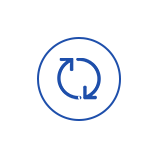

注重选材
建筑材料是建筑的基本物质，传统建筑材料主要有石材、木材、石灰和石膏，现代建筑材料有钢材、水泥、混凝土、玻璃、塑料。

质量保证
公司始终坚持质量第一的方针，立志于提高全员素质，优化生产施工工艺，强化质量管理，更加的优质、高效。
采用高新技术
标准化设计、工厂化生产、装配化施工、一体化装修、信息化管理，绿色施工，节能减排，这些都是建筑产业转型升级的目标。
业务范围广
业务范围涵括国内外各大中小型房屋建筑、装饰装修、工业、民用设备安装、管道、电气仪表安装工程。